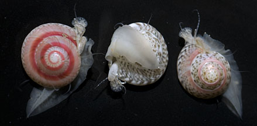
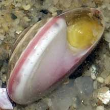
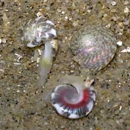
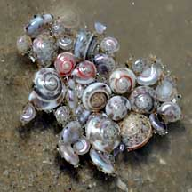

|
|
| shelled snails text index | photo index |
| Phylum Mollusca > Class Gastropoda > Family Trochidae |
| Button
snail Umbonium vestiarium Family Trochidae updated Sep 2020 Where seen? This tiny pretty snail is found in the thousands, lying just beneath the sand surface on some parts of our Northern shores, on sand bars or sandy shores. In the past, however, they were more common on many of our mainland shores. Elsewhere, they are abundant on fine sandy bottoms. Features: 0.8-1cm. Shell thin, circular, glossy with an amazing variety of colours and patterns. It is said that no two button snails are alike! These snails are so enchanting that the guides call them the 'Jewels of Chek Jawa'. Operculum, thin, made of a horn-like material with concentric rings, yellow. The flexible operculum allows the animal to withdraw deep into the coils of the shell. Body pale speckled, edge of the mantle fringed with long tentacles. Foot long, leaf-like. Tiny eyes on long stalks, long tentacles finely banded, with two tubular siphons, one with fringes. |
 East Coast Park, Aug 12 |
 Shell opening and operculum. Tanah Merah, Feb 07 |
|
| Escaping Buttons: The long mobile foot can be used to burrow rapidly into wet loose
fine sand (the snail doesn't do so well in compact dry sand). The
streamlined shell helps them burrow rapidly. To escape predators,
button snails make a short, spiralling leap then quickly bury themselves
into the sand again. Sometimes, on wet sand, you might see the tiny
trails left by panicky button snails, punctuated by little holes where
they disappeared into the sand. When disturbed, submerged button snails may also pop up and float on the water surface, sometimes forming 'rafts' of several snails. After a while, the snails will sink one by one, and burrow into the sand. Could this be a way for them to escape predatory snails and other animals that can't swim? It may also allow them to disperse to new places quickly? |
 Tiny button snails leaping away from a hunting moon snail. Changi East, Oct 11 |
 Button snails leaping away from a Moon snail Tanah Merah, Apr 05 |
 They can float, forming 'rafts'. Changi, Jul 08 |
| What does it eat? More like bivalves
rather than snails, button snails lie just beneath the sand and filter
feed for detritus and plankton. Like bivalves, a button snail has
an inhalant siphon fringed with short tentacles which is used to suck
in water, and an exhalant siphon which expels the water. When there
isn't much food in the water, it may use its right tentacle and long
foot to gather edible bits on the sand surface. Role in the ecosystem: Button snails appear to be among the favourite prey of Moon snails. Olive snails have also been seen hunting them. Other large animals probably also snack on them. Empty buttons shells are favourite homes of tiny hermit crabs. So please resist the temptation of taking home even an empty button snail. A homeless hermit crab might need it! |
 |
| Human
uses: Sadly, these beautiful tiny animals are collected,
killed and their shells sold as cheap curios and for handicrafts.
In the Philippines they are commonly gathered as food. Vendors traditionally
provide the buyer with an aromatic thorn from the Acacia to pry the
meat out. Status and threats: Button snails were highly abundant in Singapore in the 1960's, but populations have declined drastically as their habitats have since become degraded or were lost. They are now listed as 'Vulnerable' on the Red List of threatened animals of Singapore. Trampling by careless visitors and overcollection can also have an impact on local populations. |
| Button snails on Singapore shores |
On wildsingapore
flickr
|
| Other sightings on Singapore shores |
Links
References
|